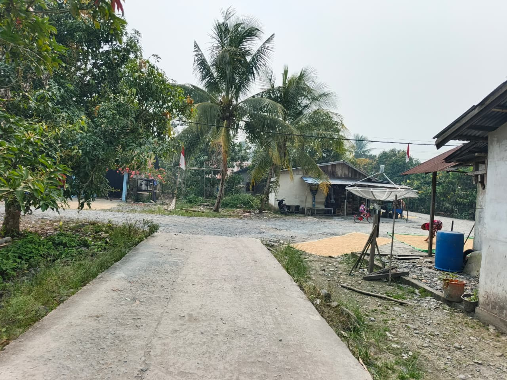

Galeri Desa
Album Desa Semayang
Koleksi foto suasana, lingkungan, dan kehidupan Desa Semayang.
Galeri 01
Pemandangan Desa
Suasana lingkungan Desa Semayang yang asri dan nyaman.

Galeri 02
Kehijauan Dusun Sepadu
Hamparan hijau dan suasana pedesaan yang menyegarkan.

Galeri 03
Jembatan Desa Semayang
Salah satu bagian dari lingkungan Desa Semayang.